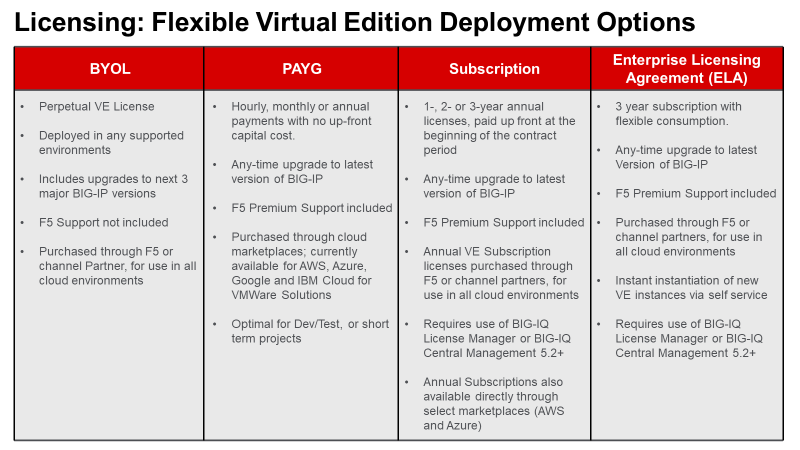

Unofficial - F5 Certification Exam Prep Material > F5 202 - Pre-Sales Fundamentals Study Guide 11/01/19 Source | Edit on
Section 4 - Supporting the Close¶
Objective - 4.01 Gather appropriate information to size F5 solutions¶
4.01 - Determine quantity
*https://f5.com/de/products/technologies/scalen*
How many F5 devices do you need?
This question is partly about redundancy and partly about sizing. You can look at how much capacity a customer will need based on throughput, planning for growth, etc. and pick the right sized hardware appliance or virtual appliance, to fit their needs. And a single appliance may fit the capacity needs; however, it does not provide redundancy in the event of hardware (appliance or hypervisor) failure. So, when determining how many you need there is always a need for redundancy. If you deploy in an HA pair for redundancy you can run them as Active/Standby or Active/Active. Neither of these redundancy modes allows for more capacity. It is simply a different means of failover management. The F5 ScaleN redundancy deployment model will allow for redundancy as well as capacity management and is discussed in more detail in this document.
4.01 - Determine high availability options
*https://www.f5.com/pdf/products/big-ip-platforms-datasheet.pdf*
High Availability
Device service clustering, or DSC, is an underlying architecture within BIG-IP Traffic Management Operation System (TMOS), based on the F5 ScaleN technology. The DSC architecture allows you to create a redundant system configuration for multiple BIG-IP devices on a network. System redundancy includes the ability to mirror connection and persistence information to a peer device to prevent service interruptions during failover. DSC provides synchronization and failover of BIG-IP configuration data at user-defined levels of granularity, among multiple BIG-IP devices on a network. More specifically, you can configure a BIG-IP device on a network to:
- Synchronize some or all of its configuration data among several BIG-IP devices
- Fail over to one of many available devices
- Mirror connections to a peer device to prevent interruption in service during failover
If you have two BIG-IP devices only, you can create either an active-standby or an active-active configuration. With more than two devices, you can create a configuration in which multiple devices are active and can fail over to one of many, if necessary.
By setting up DSC, you ensure that BIG-IP configuration objects are synchronized and can fail over at useful levels of granularity to the most-available BIG-IP devices on the network. You also ensure that failover from one device to another, when enabled, occurs seamlessly, with minimal to no interruption in application delivery.
The BIG-IP system supports either homogeneous or heterogeneous hardware platforms within a device group.
The most common DSC implementation is an active-standby configuration, where a single traffic group is active on one of the devices in the device group and is in a standby state on a peer device. If failover occurs, the standby traffic group on the peer device becomes active and begins processing the application traffic.
To implement this DSC implementation, you can create a Sync-Failover device group. A Sync-Failover device group with two or more members and one traffic group provides configuration synchronization and device failover, and optionally, connection mirroring.
An active-active pair is a pair of BIG-IP devices configured so that both devices are actively processing traffic and are ready to take over one another if failover occurs. The two devices synchronize their configuration data to one another.
In this configuration, both devices actively process application traffic, each for a different application. One device processes its application traffic using the configuration objects associated with the default floating traffic group
F5 ScaleN technology enables organizations to scale performance, virtualize, or horizontally cluster multiple BIG-IP devices, creating an elastic Application Delivery Networking infrastructure that can efficiently adapt as needs change.
On-demand scaling—Increase capacity and performance with on-demand scaling, simply adding more power to your existing infrastructure instead of adding devices. Some BIG-IP appliance models can be upgraded to the higher performance model within each series through on-demand software licensing, which enables organizations to support growth without new hardware.
Operational scaling—Virtualize ADC services with a multi-tenant architecture that supports a variety of BIG-IP versions and product modules on a single device. F5 Virtual Clustered Multiprocessing (vCMP) technology enables select hardware platforms to run multiple BIG-IP guest instances. Each guest instance acts like a physical BIG-IP device, with a dedicated allocation of CPU, memory, and other resources. vCMP offers per-guest rate limiting for bandwidth, enabling different performance levels for each guest.
Further divide each vCMP guest using multi-tenant features such as partitions and route domains, which can isolate configuration and networks on a per-virtual-domain basis. Within each virtual domain, you can further isolate and secure configuration and policies, with a role-based access system for administrative control. When route domains/partitions are combined with vCMP guests, F5 provides the highest density multi-tenant virtualization solution, which can scale to thousands of virtual ADC (vADC) instances.
This ability to virtualize BIG-IP ADC services means service providers and enterprise users can isolate based on BIG-IP version, enabling departmental or project-based tenancy as well as performance guarantees, consolidated application delivery platform management, and increased utilization.
Application scaling—Increase capacity by adding BIG-IP resources through an
all-active approach, and scale beyond the traditional device pair to eliminate idle and costly standby resources. Application scaling achieves this through two forms of horizontal scale. One is Application Service Clustering, which focuses on application scalability and high availability. The other is Device Service Clustering, designed to efficiently and seamlessly scale BIG-IP application delivery services and sync application policies.
Application Service Clustering delivers sub-second failover and comprehensive connection mirroring for a highly available cluster of up to eight devices at the application layer, providing highly available multi-tenant deployments. Workloads can be moved across a cluster of devices or virtual instances without interrupting other services and can be scaled to meet business demand.
Device Service Clustering can synchronize full device configurations in an all-active deployment model, enabling consistent policy deployment and enforcement across devices—up to 32 active nodes. This ensures a consistent device configuration, with syncing of hardened firewall and access policies to simplify operations and reduce attack surfaces.
4.01 - Determine virtual environment details
*https://www.f5.com/services/resources/white-papers/virtual-clustered-multiprocessing-vcmp*
Virtualization
Data center consolidation and virtualization have changed the way organizations look at CapEx and OpEx. Gone are the days when adding new capacity or applications was simply accomplished by buying “more.” Today, CIOs and architects are looking to maximize the return on investment in hardware and software through virtualization technologies that enable them to squeeze every ounce of computing power from their existing data centers.
This is most apparent in the world of application servers, but the potential benefits for other devices, firewalls, routers, and Application Delivery Controllers (ADCs) cannot be ignored. Consequently, most vendors offer strategies around multi-tenancy or virtual appliances in one form or another to provide the same kind of flexibility for their solutions that OS virtualization offers in the server world.
While both multi-tenancy and virtual appliances improve organizations’ deployment flexibility and their ability to get maximum ROI from both CapEx and short-term OpEx, these strategies have failed to provide the same kind of high-reliability, high-performance solutions as traditional purpose-built systems.
*https://www.f5.com/pdf/products/big-ip-virtual-editions-datasheet.pdf*
*https://www.f5.com/pdf/white-papers/big-ip-ltm-ve-wp.pdf*
F5 Virtual Edition
F5 BIG-IP virtual editions (VEs) are virtual application delivery controllers (vADCs) that can be deployed on all leading hypervisors and cloud platforms running on commodity servers. BIG-IP VEs deliver all the same market-leading application delivery services including advanced traffic management, acceleration, DNS, firewall, and access management that run on F5 purpose-built hardware. VE software images are downloadable and portable between on-premises virtualized data center, public cloud, and private cloud environments. With BIG-IP virtual editions and F5 BIG-IQ Centralized Management solutions, you can rapidly provision consistent application services across the data center and into the cloud
Key Benefits
Deploy with increased agility:
Quickly and easily spin up, spin down, or migrate application delivery services in and across the data center and public cloud, using instant deployment options as needed.
Achieve automation and orchestration in cloud architectures:
Automate deployment and configuration or integrate with leading orchestration frameworks in cloud or software-defined networking (SDN) environments through cloud solution templates, REST APIs, and granular programmability.
Optimize application and security services:
Rapidly provision and consolidate application services on your existing servers, unlocking the broadest feature density through flexible licensing models that align to your business needs.
Provide the ultimate in flexibility:
Get the most flexible deployment options in the industry, with support across all major virtualization and container platforms for both private and public cloud environments.
*https://clouddocs.f5.com/cloud/public/v1/matrix.html*
F5 Virtual Edition Supported Platforms
Each customer may have different virtualization environments with in their data centers, private cloud or even different pubic clouds which each have their own hypervisors. F5 virtual editions can run on many different versions of hypervisors. The link below shows the full matrix of hypervisors our VE can run on. You should be aware of our flexibility.
https://www.f5.com/services/resources/white-papers/virtual-clustered-multiprocessing-vcmp
F5 vCMP
Virtual Clustered Multiprocessing (vCMP) is the industry’s first purpose-built hypervisor—it allows the complete segmentation of those purpose-built, scalable resources into independent, virtual ADCs.
vCMP allows a BIG-IP system to run multiple instances of BIG-IP software on a single hardware platform. The vCMP host (hypervisor) can allocate a specific amount of hardware resources to each vCMP guest (instance). The possible hardware allocations may change between versions.
The payoff of a purpose-built hypervisor that’s deeply integrated with the underlying hardware and guest software is the most powerful virtualized ADC solution available today. With vCMP, organizations can independently operate virtual instances without sacrificing interoperability with existing equipment, purpose-built hardware, or orchestration solutions.
With vCMP, administrators can run multiple instances of TMOS, each isolated from the others. Unlike some implementations, because vCMP is a true hypervisor, the guest ADCs are completely isolated—so they can run entirely different versions of ADC software. This means that test and development staff can create new virtual ADC instances to test new versions of software without any effect on existing deployments. Or, competing business units can choose if/when they upgrade their virtual instances to meet their unique business requirements. All they have to do is provision a new instance, apply their existing configuration, and then test the upgrade process and results. Any problems can be addressed by simply removing the instance and starting over. Alternatively, administrators can upgrade individual instances in place without having to upgrade all instances.
Because each guest is its own complete ADC, individual business units or other customers have complete control over their deployment, the ability to further segment their deployment using administrative controls, and the ability to manage independent logs and configurations. However, a failure or misstep cannot affect any other virtual instance. Rebooting the instance, runaway processes, and flat-out misconfigurations are isolated from all other instances.
The deep integration of vCMP also enables it to work seamlessly with existing functionality. For instance, CMP allows new compute resources to be added incrementally and become instantly available to the ADC. When vCMP is in operation, those new resources can be automatically allocated to existing virtual instances without any interruption, reboot, or reconfiguration. On the other side of the stack, when configuring vCMP guest allocation, the hypervisor can directly assign IP addresses for management and VLAN tags along with the resource allocation restrictions. Creating a new ADC instance can be done in a matter of minutes, and a new administrator can log in and start their configuration. Other vendors’ virtual ADC solutions require reboot of virtual instances before new resources are available, and each instance must be manually configured before being ready for further configuration. vCMP allows virtual instances full access to new network interfaces, VLANs, and even entirely new resource blades instantly and without interruption.
Flexible allocation allows administrators to designate CPU resources (and blades on chassis models) to guests upon creation. Dynamic scaling allows reallocation of CPU resources, without disruption. This makes it possible to redistribute resources to better align with the need for business agility in addressing growth and scale, as well as support additional or new application delivery services that may require more CPU resources. Administrators can size guests according to what’s required for each deployment—and modify when those requirements change.
4.01 - Determine hardware details
https://www.f5.com/pdf/products/big-ip-platforms-datasheet.pdf
BIP-IP iSeries Hardware
The massive performance and scalability of the BIG-IP platform reduces the number of ADCs needed to deliver even the most demanding applications. By offloading computationally intense processes, you can significantly reduce the number of application servers needed.
The BIG-IP iSeries platform perfectly blends software and hardware innovations that balance the need for performance, scalability, and agility. The F5 TMOS operating system provides total visibility, flexibility, and control across all application delivery services. With TMOS, organizations can intelligently adapt to the diverse and evolving requirements of applications and networks. Other unique or patented hardware and software innovations enable the BIG-IP iSeries platform to offer unmatched capabilities.
F5 TurboFlex optimization technology:
Field-programmable gate arrays (FPGAs), tightly integrated with CPUs, memory, TMOS, and software, provide specific packet-flow optimizations, L4 offload, support for private cloud tunneling protocols, and denial-of- service (DoS) protection. These hardware optimizations not only improve performance but free CPU capacity for other app delivery and security tasks. Only BIG-IP iSeries appliances feature TurboFlex performance profiles—user-selectable, pre-packaged optimizations that provide different performance characteristics depending on the business need.
FIPS Compliance:
The Federal Information Processing Standards (FIPS) specify requirements for cryptographic modules. FIPS compliance is required for many government agencies and industries such as financial services and healthcare that demand the highest standards in information, application, and data security. F5 offers a broad range of FIPS-certified hardware appliances that support a FIPS 140-2 Level 2 implementation for RSA cryptographic key generation, use, and protection (when running validated versions of TMOS). For additional protection, the BIG-IP 10350v-F/i7820-DF/i5820-DF supports a FIPS 140-2 Level 3 implementation of the Internal HSM (PCI card). BIG-IP Hardware FIPS appliances include integrated HSMs that have tamper-evident seals with a hardened-epoxy cover which, if removed, will render the card useless. Keys generated on or imported into a BIG-IP system hardware security module (HSM) are not extractable in a plain-text format. This security rating means the 10350v-F/ i7820-DF/i5820-DF HSM card adds tamper-resistance, which is an additional means of detection to the tamper-evident methods of Level 2, as well as a response to physical access attempts, or to cryptographic module use or tampering.
vCMP Support:
Not all models of hardware support provisioning vCMP. The list of models that can provision vCMP are listed in this link: https://support.f5.com/csp/article/K14088 . There are not any physical differences between the lower iSeries model and the higher model (i.e. i5600 and i5800). There is simply a software restriction that makes the lower model exist. The higher model is simply running a high-performance license. If a customer buys an i5600 and later wants to upgrade to an i5800, it can be done without a forklift upgrade of hardware by applying the upgrade license and all the functionality of the i5800 (e.g. vCMP) is possible on their existing hardware.
Objective - 4.02 Given a scenario, determine the appropriate F5 licensing requirements¶
4.02 - Determine appropriate licensing solution (Perpetual, Utility, ELA, Subscription, BYOL)
F5 Consumption Models
No matter which features and capabilities of TMOS a customer needs (e.g. load balancing, global load balancing, WAF, IP intelligence, web fraud protection, etc.) using Good, Better, Best (GBB) (discussed in Section 3) and add-on licenses, they still have licensing options on how they consume the F5 products in their environments (Perpetual, Utility, Subscription or ELA).
https://www.f5.com/products/get-f5/perpetual-licensing-gbb
Perpetual/BYOL
All F5 physical hardware and Virtual Editions are licensed with a perpetual license key based on the GGB licensing model and add-on licenses. These devices can be run in a customer’s data center, their private cloud or even a public cloud. When a VE is deployed in the public cloud using a perpetual license key, it is considered a BYOL in the Cloud. There are other licensing models for cloud environments that we will cover below.
https://f5.com/products/platforms/f5-ready-cloud-program
Utility/PAYG
Utility (pay-as-you-go) using GBB enables an hourly, daily, or monthly billing model to support temporal deployments like dev & test or for customers who prefer the OpEx model.
https://www.f5.com/pdf/licensing/big-ip-virtual-edition-subscription-licensing-overview.pdf
Subscription Licensing
Subscription Licensing Offer for BIG-IP VE is an auto-renewal agreement for BIG-IP VE licenses using GBB, available in 1-year, 2-year, and 3-year periods. Within the agreement, organizations choose local BIG-IP VE licenses at subscription initiation. The initial order of subscription licenses is populated in F5 BIG-IQ License Manager and is available for immediate deployment. Subscription Licensing Offer for BIG-IP VE enables IT departments to self- manage their lifecycles. License instantiation or revocation can be done via the BIG-IQ License Manager either directly or via REST API. Net-new licenses from the BIG-IP VE Subscription list can be instantiated at any time. Activity reports are provided monthly to F5 via BIG-IQ API upload or email. F5 Premium 24x7 support and software updates are included in the subscription.
https://www.f5.com/pdf/licensing/big-ip-virtual-edition-enterprise-licensing-agreement-overview.pdf
Enterprise License Agreement (ELA)
F5’s ELA is a licensing model designed to support your customers’ need for more flexibility how they buy and deploy their investment in F5. F5’s ELA is a 3-year monetary commitment for BIG-IP VE’s (e.g. LTM, ASM, AFM, DNS, APM) that the customer deploys as needed when needed at a predictable yearly cost.
Objective - 4.03 Given a scenario, identify line items to build an F5 bill of materials (BOM)¶
4.03 - Gather necessary information (support options, interfaces, power supplies, support options, product SKUs, Professional Services)
*https://www.f5.com/pdf/products/big-ip-platforms-datasheet.pdf*
*https://www.f5.com/pdf/products/viprion-overview-ds.pdf*
*https://support.f5.com/csp/article/K15045* - QSFP+ Breakout Cable Options
*https://support.f5.com/csp/article/K8153* - F5 Support of Third Party Hardware Components
*https://support.f5.com/csp/article/K4309* - F5 Support Lifecycle
*https://support.f5.com/csp/article/K13435* - BIG-IP Power Cabling
As a sales engineer you will often need to create a Bill of Materials (BoM). You can take all of the sizing information that determined what F5 products will fit the customer’s needs and information you have gathered to support the implementation of F5 in the customers environment to create this list of necessary goods. You would normally need the F5 price sheet for the SKU numbers that correlate to the parts you need for the BoM. You will not need to know SKU numbers for the exam. The exam may present you with a list of requirements and an example BoM to have you determine what is missing or is not necessary.
You will generally need the F5 platform, possibly blades if it is chassis-based solution and modular interfaces. iSeries models above the i5000 series ship with redundant power supplies and are optional on i5000 series and down. The Viprion chassis will need to be scoped for power needs based on the model’s power or platform guides. That can be found as a link off of the Viprion datasheet, which is linked above.
All devices ship with standard C19 to NEMA 5-20P in US/CANADA, so normally you will need to understand if that will work in the customer’s environment but as it is an exam is it there or not is the point.
F5 does not support third party transceivers or other hardware.
If there are 40GB interfaces and going with 10GB breakout cable requires both the breakout cable and the transceivers. You must purchase the 40 GbE port transceivers for the F5 device from F5, as well as the appropriate 10 GB port transceivers for the upstream switch from your switch vendor.
For BIG-IP and VIPRION platforms that support 40 GbE ports, F5 provides QSFP+ breakout cable options to convert a single 40 GbE port to four 10 GB ports. The QSFP+ breakout cable has a female MPO/MTP connector on one end for connecting to the QSFP+ port on the VIPRION or BIG-IP device and four LC duplex connectors on the other end for connecting to the SFP+ modules on an upstream switch. These cables do not have any active components/transceivers on either end. F5 offers three length options for the QSFP+ breakout cable, one meter, three meters, and 10 meters. If you require QSFP+ breakout cable length other than the three lengths offered by F5, you may be able to purchase QSFP+ breakout cables of equivalent specifications from third-party vendors.